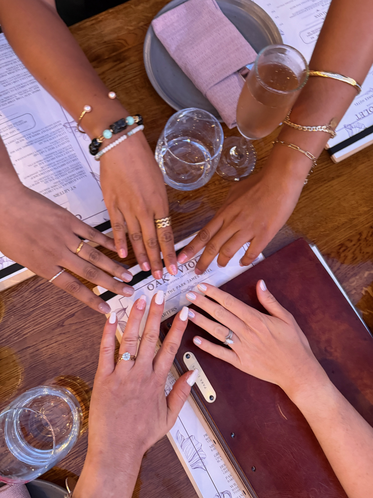

Space Junk
Nica Tanaka :: Dat Ngo
A digital archive that explores the relationship between personal experience and the concept of panoptic oberservation using an artist's
EXTRA LARGE
personal collection of photographs.



Nica Tanaka :: Dat Ngo
A digital archive that explores the relationship between personal experience and the concept of panoptic oberservation using an artist's